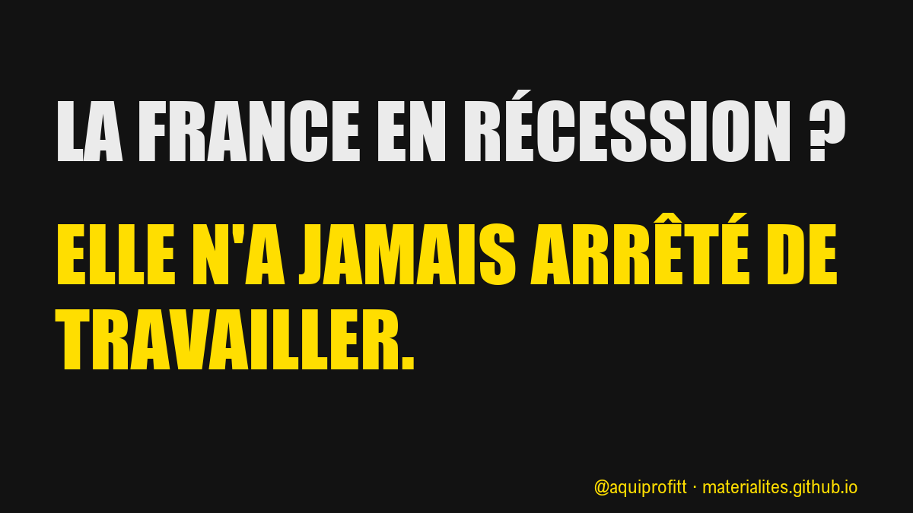

Réponse · 28 novembre 2026
Garder les enfants des autres, c'est du PIB. Garder les siens, ça vaut zéro
L’idée reçue
« Le PIB mesure la richesse du pays. »

Elle se lève à six heures, prépare le petit-déjeuner, dépose les enfants, passe voir son père qui ne peut plus sortir seul. Le soir, elle fait à manger, les devoirs, la lessive. Si elle était payée pour garder les enfants d'une voisine, ce serait de l'activité, comptée dans le PIB. Elle garde les siens : pour la comptabilité nationale, elle ne produit rien.
Le PIB compte ce qui se vend, et ce que coûtent les services publics. Le travail fait gratuitement à la maison n'y entre pas : la cuisine, le ménage, les soins aux enfants, aux parents âgés, aux malades. L'Insee l'a pourtant mesuré : en 2010, environ 60 milliards d'heures de travail domestique, contre 38 milliards d'heures de travail payé. Valorisé, il pèserait autour d'un tiers du PIB. Les femmes en font près des deux tiers.
Quand ce travail sort de la maison, il devient un métier, mais un métier mal payé. Les aides à domicile sont presque toutes des femmes ; les trois quarts sont à temps partiel, et 40 % ont des journées coupées, avec trois heures ou plus de trou au milieu, non payées. Chez les particuliers employeurs, la part de salarié·es immigré·es est plus de deux fois plus élevée que dans l'ensemble des emplois. Le soin qu'on voit est payé au rabais, et il retombe sur les femmes les moins protégées : pauvres, immigrées, parfois sans papiers.
Ce n'est pas qu'une affaire de statistiques. Le PIB gouverne beaucoup de choses : le déficit et la dette se mesurent en points de PIB, les budgets se règlent sur la croissance prévue. Quand on ferme des lits ou des places en maison de retraite pour tenir ces ratios, le travail ne disparaît pas : il retourne à la maison, gratuit, et le plus souvent chez les femmes. Un indicateur qui ne voit pas ce travail rend sa suppression invisible. Gouverner par les besoins, ce serait partir de lui : combien d'heures de soin il faut, qui les fait, et comment on les paie.
Alors arrêtons de faire semblant. Quand on nous annonce que le PIB a reculé de 0,2 %, ça ne dit rien de la journée de cette femme, ni de celle de millions d'autres qui font tenir le pays sans être comptées. Un chiffre qui dit qu'elle ne produit rien n'a pas à décider de son hôpital, de sa crèche ou de sa retraite. Aux responsables politiques, de droite comme de gauche, on demande une chose simple : arrêtez de gouverner avec le PIB. Dites-nous combien il faut de lits, de places en crèche, d'heures d'aide à domicile, et comment vous allez payer celles et ceux qui les font. C'est ça, la richesse d'un pays.
Les sources
- Insee Première n° 1423, « Le travail domestique : 60 milliards d'heures en 2010 », novembre 2012
- Dares, étude sur les conditions de travail des aides à domicile (temps partiel et horaires coupés), 2021
- Vie publique, « Aides à domicile : conditions de travail et risques psychosociaux »
- Insee, Immigrés et descendants d'immigrés, édition 2023, fiche emploi
Pour aller plus loin
 vidéoGRÈVE FÉMINISTE : arrêter le monde pour le changerLa grève féministe : et si on arrêtait tout ce travail que le PIB ne compte pas ?podcastpodcast« Si on s’arrête, tout s’arrête » : la grève féministe comme arme politique - S11E57 - Jeudi 16 Avril 2026« Si on s'arrête, tout s'arrête » : le travail gratuit des femmes comme arme politique.
vidéoGRÈVE FÉMINISTE : arrêter le monde pour le changerLa grève féministe : et si on arrêtait tout ce travail que le PIB ne compte pas ?podcastpodcast« Si on s’arrête, tout s’arrête » : la grève féministe comme arme politique - S11E57 - Jeudi 16 Avril 2026« Si on s'arrête, tout s'arrête » : le travail gratuit des femmes comme arme politique. vidéoMaud Simonet : « Ce n'est pas le travail gratuit qui pose problème, c'est son appropriation »Dix-huit minutes avec Maud Simonet : le problème n'est pas le travail gratuit, c'est qui en profite.
vidéoMaud Simonet : « Ce n'est pas le travail gratuit qui pose problème, c'est son appropriation »Dix-huit minutes avec Maud Simonet : le problème n'est pas le travail gratuit, c'est qui en profite. vidéoLe féminisme MARXISTE c'est MIEUX ! Aurore KoechlinOnze minutes sur le féminisme marxiste : pourquoi le travail à la maison fait tourner l'économie.
vidéoLe féminisme MARXISTE c'est MIEUX ! Aurore KoechlinOnze minutes sur le féminisme marxiste : pourquoi le travail à la maison fait tourner l'économie. vidéoAU SERVICE DES RICHES : ENQUÊTE SUR LES DOMESTIQUES, ENTRE POUVOIR ET SERVITUDE - Alizée DelpierreUne enquête chez les domestiques des grandes fortunes : qui fait le travail, et à quel prix.podcastpodcastChristine Delphy, sociologue et militante féministeChristine Delphy, qui a montré dès les années 1970 que le travail domestique est un travail exploité.
vidéoAU SERVICE DES RICHES : ENQUÊTE SUR LES DOMESTIQUES, ENTRE POUVOIR ET SERVITUDE - Alizée DelpierreUne enquête chez les domestiques des grandes fortunes : qui fait le travail, et à quel prix.podcastpodcastChristine Delphy, sociologue et militante féministeChristine Delphy, qui a montré dès les années 1970 que le travail domestique est un travail exploité.